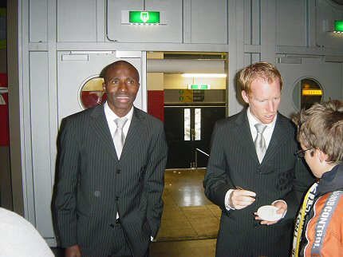

|
Roda JC - Feyenoord (2-3) 20 november 2005
|
Verkooppunt van sfeerartikelen voor de zuidwest-ingang.
Judith heeft flink ingekocht.
Roda behoort tot de veiligste clubs in de eredivisie.
De begeleiding is hier gewoon super geregeld.....

Het gastenvak met een treffend spandoek.
Maar toch met 900 man gekomen!
Roda opent ijzersterk en zet Feyenoord flink onder druk. het resulteert in
diverse kansen waarvan dit een van de betere is. Cissé ziet een hard schot
prachtig gepareerd door doelman Lodewijks.
Bodnar passeert met een domme terugspeelbal bijna Kujovic.
Arme meid, en het is nog niet eens echt winter.
Roda maakt het spel maar Kuijt schiet in de 25e minuut de bal in de
linkerhoek: 0-1.
Als je dat ook op het WK doet ben je het ventje!
Sergio legt aan voor een verwoestend schot.
De knuisten gaan de lucht in voor een formidabele treffer: 1-1, (27').
Bodnar in duel met Pardo. De Guzman gaat er met de bal vandoor.
Bahia scoort 1-2, (33').
Vlak voor rust scoort goudhaantje Oper de gelijkmaker: 2-2, (44').
De aantrekkelijke wedstrijd heeft zijn weerslag op het publiek. Sfeer in Z16.
De huisfotografe van het FP checkt haar digicam.
Heftig duel tussen Cissé en Greene.
Cissé wordt binnen de 16 onderuitgehaald.
Lafbek Van Egmond durft geen penalty te geven.
Het warrige optreden van Van Egmond leidt tot frustraties waardoor enkele
onnodige kaarten vallen.
Biseswar schiet hard binnen: 2-3, (80').
Tumult langs de zijlijn nadat Kah rood (2xgeel) heeft gekregen en Stevens
naar de tribune wordt verbannen.
Het publiek is woedend!
Van Dijk pikt ook nog een gele kaart mee....
In de slotfase is er nog een vrije trap voor Roda maar die levert niks op.
Mooie wedstrijd, nul punten....

Teleurgestelde gezichten in de kickoff.

De geblesseerde Sonko en de herboren Lachambre bezoeken het home.
Wie staat daar acher de Schaesbergvlag
>>>
De ontvoering van deze vlag werd op het nippertje verijdeld. Niet alleen
zonder punten, ook zonder vlag gaan zij weer naar huis ;-) Meer foto's op collega-site
"Ego2.nl::Feyenoord
Foto Fansite"
© Koempels Pleasure Dome
|